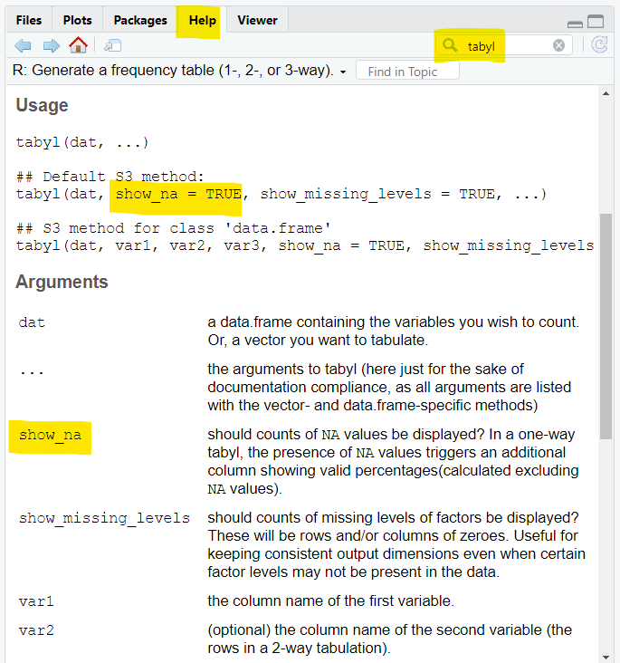
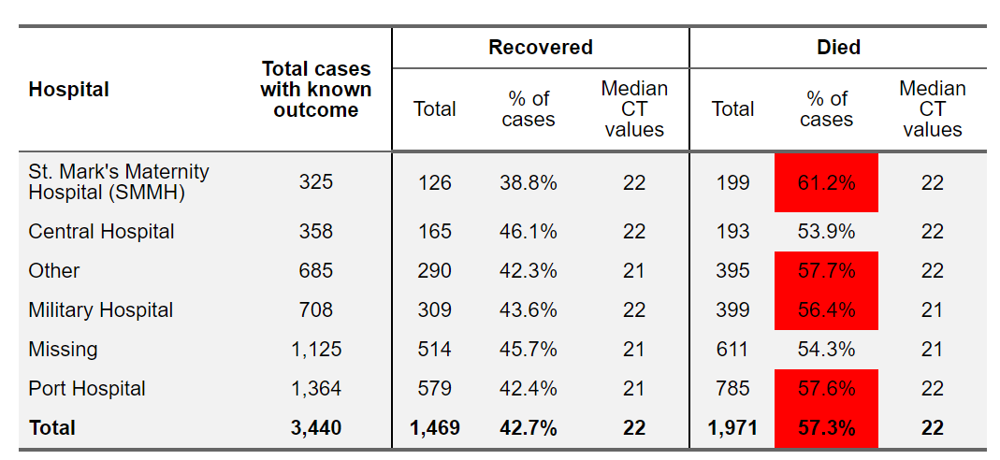

Introduction to R for Applied Epidemiology and Public Health
Welcome
Welcome to the live course “Introduction to R for applied epidemiologists”, offered by Applied Epi - a nonprofit organisation that offers open-source tools, training, and support to frontline public health practitioners.

Grouping and summarizing
This exercise focuses on grouping and summarizing data in descriptive tables.
Format
This exercise will guide you through a set of tasks.
You should perform these tasks in RStudio and on your local
computer.
Getting Help
There are several ways to get help:
- Look for the “helpers” (see below)
- Ask your live course instructor/facilitator for help
- Ask a colleague or other participant in the course for tips
- Post a question in Applied Epi Community in the category for questions about Applied Epi Training
Here is what those “helpers” will look like:
Click to read a hint
Here you will see a helpful hint!
Click to see a solution (try it yourself first!)
linelist %>%
filter(
age > 25,
district == "Bolo"
)Here is more explanation about why the solution works.
Quiz questions
Please complete the quiz questions that you encounter throughout the tutorial. Answering will help you to comprehend the material, and will also help us to improve the exercises for future students.
To practice, please answer the following questions:
Icons
You will see these icons throughout the exercises:
| Icon | Meaning |
|---|---|
| Observe | |
| Alert! | |
| An informative note | |
| Time for you to code! | |
| Change to another window | |
| Remember this for later |
Learning objectives
In this exercise you will:
- Group data using {dplyr} functions
group_by(),summarise(), andcount()
- Make descriptive tables with the {janitor}
tabyl()andadorn_()functions
- Make descriptive tables with the {gtsummary} function
tbl_summary()
- Convert basic R tables into HTML with {flextable}
Prepare for analysis
Open the R project
Open the RStudio by double-clicking on the “intro_course” RStudio project file, in the “intro_course folder on your desktop (as in the previous module).
Re-open your script: “ebola_analysis.R” where you wrote the cleaning code from the previous module.
Add packages
Ensure that the following packages are included in the
pacman::p_load() command at the top of your script:
- janitor
- flextable
- gtsummary
- scales
However, ensure that the {tidyverse} package is still listed last in this command. This is so that any {tidyverse} functions will take precedence over functions in other packages with the same name.
Now, when you run this command, these packages will be installed (if not already) and loaded for use.
Click to see a solution (try it yourself first!)
pacman::p_load(
rio, # for importing data
here, # for locating files
janitor, # for data cleaning
lubridate, # for date cleaning
epikit, # creating age categories
gtsummary, # creating tables
scales, # percents in tables
flextable, # for making pretty tables
tidyverse # for data management and visualization
)Don’t forget to write pacman::p_load(), which loads the
{pacman} package to be able to load all the other packages.
Run your R script
Run all the code in your script. If you have successfully finished the previous modules, this will do the following:
- Load packages
- Import the “raw” surveillance dataset
- Run a series of descriptive analyses to review the data
- Clean the
surv_raw“raw” data frame using the “pipe chain”, and save the clean data frame in R assurv
Now you can write more code at the bottom of the script,
using the cleaned data frame surv
Backup
If your R script causes errors, or you did not finish the last module, you can import a clean version of the surveillance linelist with the following command and use it for this exercise:
surv <- import(here("data", "clean", "backup", "surveillance_linelist_clean_20141201.rds"))If running all the code in your R script caused errors, alert your instructor.
Add a new section
Ensure that your script is well-commented (#) so that it is easy to know what is happening in each part of the script.
If you do not yet have a header over the cleaning section of your script, add one now. Place your cursor where the new section should start and press Ctrl, Shift, and R at the same time (or Cmd Shift R on a Mac).
In the pop-up, name the section “Summary tables”.
The new header should look something like this:
# Summary tables ----------------------------------------------Remember that you can navigate your script using these section headers using the “Outline” button in the upper-left of the R script.
{janitor} functions
Often, we want just a quick tabulation of counts of a categorical variable, or simply to know “what are the unique values” in a particular column.
The tabyl() function from {janitor} does this quickly by
tabulating the unique values of a column provided to it. Easy
customization can follow, using the related adorn_()
functions.
Try piping the surv data frame to the function
tabyl(), and specifying the column
district.
Click to read a hint
Pipe the clean surv data frame into tabyl()
and write the column district in the parentheses.
Click to see a solution (try it yourself first!)
surv %>%
tabyl(district)show_na = FALSE
The tabyl() output, when used on a column with missing
values, by default contains a “valid_percent” column that shows the
proportions as calculated when excluding any missing values.
Run the tabyl() command again but specify the
argument show_na = FALSE. How does the output
change?
surv %>%
tabyl(district, show_na = FALSE)How would you know to run this argument, or what the defaults are? This information is written in the function’s documentation, which you can read by either:
- Running the command
?tabyl, or
- See the “Help” pane (lower-right of RStudio) and type
tabylin the search bar

In this documentation, you can see that the default for this argument
is TRUE, but that if you set it to FALSE it
will remove NA values from the table.
Adorn formatting
{janitor} includes a series of “adorn” functions that you can pipe this table into, which will make the formatting nicer.
Add the following functions, in this order. Observe what each step does, one-at-a-time.
adorn_totals()
adorn_pct_formatting()
Sorting
Currently, the table of districts is sorted alphabetically by
district name. Change this by piping the result into the {dplyr}
function arrange() and specifying to sort on column
n descending.
Click to see a solution (try it yourself first!)
surv %>%
tabyl(district) %>%
adorn_totals() %>%
adorn_pct_formatting() %>%
arrange(desc(n))Think about the order of your steps… what happens if you add
adorn_totals() before arranging by column
n?
Re-arrange your steps so that the rows are in
descending order by n, but the Total row remains at the
bottom.
Click to see a solution (try it yourself first!)
surv %>%
tabyl(district) %>%
arrange(desc(n)) %>%
adorn_totals() %>%
adorn_pct_formatting()Cross-tabulation
Now try to cross-tabulate district and hospital, by placing
both column names in the tabyl() function, separated by a
comma.
Click to see a solution (try it yourself first!)
surv %>%
tabyl(district, hospital)Adorn a cross tabulation
Try to add the adorn_() functions below. See how they
behave slightly differently on cross-tabulations than they did on
tabulation of a single column.
adorn_totals()
adorn_percentages()(converts counts to decimal proportions)adorn_pct_formatting()(converts decimal proportions to % format. Also try this with the argumentdigits = 0)
Then try adding these functions (only one at a time):
adorn_ns()oradorn_ns("rear")oradorn_ns("front")
Final tabyl() exercise
Explore the data frame with tabyl(). Choose 2 tables to
include in your R script that showcase your new abilities to use
tabyl().
{dplyr} functions
count()
The {dplyr} function count() provides a simple
alternative way to tabulate counts.
Try running this code:
surv %>%
count(hospital)How does it compare to the simple tabyl() on the same
column?
Now, adjust the command so that instead of printing the table
in the R Console, the table is saved as a new data frame named
hospital_counts.
Once done, open the new data frame by clicking on it in the R
Environment, or by running View(hospital_counts).
This step is to show you, that you in are in fact creating another data frame! You could conduct analyses on this data frame, or even export it as a csv or xlsx file.
Click to see a solution (try it yourself first!)
hospital_counts <- surv %>%
count(hospital)Now try entering 2 categorical columns into the
count() command, like district and
gender (separated by a comma).
Click to see a solution (try it yourself first!)
surv %>%
count(hospital, gender)What does this table look like? How does it compare to the
cross-tabulation feature of tabyl()? What might be some
advantages or disadvantages of this “long” format?
Which of the two formats better adheres to the guidelines of “tidy data”? (remember, each variable gets its own column, each observation gets its own row…)
group_by() and summarise()
The functions group_by() and summarise()
together are the most versatile tool to make a new summary data frame to
hold summary statistics.
One major advantage of summarise() is the ability to
return more customized statistical summaries like median(),
mean(), max(), min(),
sd() (standard deviation), percentiles, and the
number/percent of rows that meet certain logical criteria.
Summary statistics
Try this command below. It should produce exactly
the same table as you made with count().
surv %>%
group_by(hospital) %>%
summarise(n_rows = n())You might wonder why anyone would write the command this way, when
they could simply write count()? The answer is that you can
add more lines within summarise() that will create new
calculated summary columns.
- The
n_rowsis the *name we are designating for a new column in the summary dataset
- The
= n()is a functionn()that counts the number of rows (in this case, within the group/hospital)
Regard below how 3 new columns are created, each with their respective calculations:
surv %>%
group_by(hospital) %>%
summarise(
n_rows = n(), # amount of rows per group
age_avg = mean(age_years, na.rm = T), # mean age in the group
max_onset = max(date_onset, na.rm=T) # latest onset date
)In the later two rows, within the statistical functions, the column
to be used is listed (e.g. age_years) and any other
relevant arguments (e.g. na.rm = TRUE for most mathematical
functions).
na.rm = TRUE
We have mentioned before how in most mathematical functions you
should include the argument na.rm = TRUE. Again, this is
because R wants to alert you to any missing values in the calculation,
and so it will return NA by default if any are present.
Setting na.rm = TRUE (NA “remove”) turns off
this default behavior.
As an experiment, temporarily re-run your above code but without
na.rm=T in the max_onset calculation. What
changes? Do you see how the result is impacted by the fact that there
are missing values of date_onset within the
max() calculation?
Logical criteria using sum()
You can use sum() within summarise() to
return the number of rows that meet a logical criteria. The expression
within is counted if it evaluates to TRUE. For example:
sum(age_years < 18, na.rm=T)
sum(gender == "male", na.rm=T)
sum(response %in% c("Likely", "Very Likely"))
Note the use of na.rm = TRUE within mathematical
functions like sum(), otherwise NA will be
returned if there are any missing values in the assessed values.
Write a summarise() command that returns, for
each hospital, the number of female cases.
Click to see a solution (try it yourself first!)
surv %>%
group_by(hospital) %>%
summarise(fem = sum(gender == "female", na.rm = TRUE))You may find this more clear to read, written as:
surv %>%
group_by(hospital) %>%
summarise(fem = sum(
gender == "female",
na.rm = TRUE))What would you change to the calculation to the number of
male cases? What about the number of cases with unknown/missing
gender? (hint: it involves using
= sum(is.na(gender), na.rm=T))
Percents
Once you begin calculating these columns, you may want to divide one by another, to create a percent.
Once you have defined a column within summarise(), you
can reference in lower parts of the same
summarise() command. For example:
- You calculate the total number of cases per hospital, and call it
n_cases
- You calculate the number of male cases per hospital, and call it
males
- You calculate the proportion male using the two previous
surv %>%
group_by(hospital) %>%
summarise(
n_cases = n(),
males = sum(gender == "male", na.rm=T),
males_pct = males/n_cases
)What does that percent look like? Is it really a percent? Or more of a (decimal) proportion?
There is a function you can use to quickly transform this proportion
into a percent - it is the function percent() from the
package {scales}.
Try this now
surv %>%
group_by(hospital) %>%
summarise(
n_cases = n(),
males = sum(gender == "male", na.rm=T),
males_pct = percent(males/n_cases)
)For more details, see the chapter on Descriptive tables in the Epi R Handbook.
Rounding
If you need to round a number produced by summarise(),
wrap it in the function round() and use argument
digits = to adjust the number of decimals.
Try running this code, with, and without the round()
function:
surv %>%
group_by(hospital) %>%
summarise(
mean_age = round(mean(age_years, na.rm = T), digits = 0)
)As you remove round(), don’t forget to also remove the
comma and digits = 0, which are the second argument of that
function.
Conditional statistics
One of the more advanced calculation tools you can use are subsetting
brackets [ ]. These symbols can be used after a column and
will filter it according to whatever logical criteria you write
inside.
For example, if placed within summarise(),
max_temp_fvr = max(temp[fever == "yes"], na.rm = T) will
return the maximum temperature recorded in the group, but only among
the cases that did report a fever.
It is a complicated command - ask your facilitator if you do not understand it.
Final exercise
Create a data frame that summarises the following, for each hospital:
- Number of cases
- The most recent onset date
- Number of cases under age 5 years
- The percent of cases that reported vomiting
- The maximum weight, among male cases
Be sure to write this command in your R script, and adjust your
command to save this data frame in your R Environment as
hospital_info, to keep for later.
Click to see a solution (try it yourself first!)
hospital_info <- surv %>%
group_by(hospital) %>% # get statistics for each hospital
summarise(
n_cases = n(), # number of rows (cases)
max_onset = max(date_onset, na.rm = T), # latest onset date
under5 = sum(age_years <= 5, na.rm = T), # number of children under 5
vomit_n = sum(vomit == "yes", na.rm=T), # number vomiting
vomit_pct = percent(vomit_n / n_cases), # percent vomiting
max_wt_male = max(wt_kg[gender == "male"], na.rm = T) # max weight among men
)When making a complex summary table with {dplyr}, be sure to read the chapter in the Epi R Handbook, as there are details that we did not have time to cover here.
{flextable}
The {flextable} package can accept a data frame in R and convert it into an HTML table that can be saved as a pretty table file.
This is useful if you create a table with {janitor} or with {dplyr}, but want to put it in an HTML report, a Word document or PDF, or even just print it as a PNG image.
qflextable()
The most simple command from {flextable} is qflextable,
which stands for “quick flextable”. It will convert a table into an HTML
image, after making some quick display ratio and formatting adjustments.
Look for it to appear in your RStudio Viewer pane.
surv %>%
group_by(hospital) %>% # get statistics for each hospital
summarise(
n_cases = n(), # number of rows (cases)
max_onset = max(date_onset, na.rm = T), # latest onset date
under5 = sum(age_years <= 5, na.rm = T), # number of children under 5
vomit_n = sum(vomit == "yes", na.rm=T), # number vomiting
vomit_pct = percent(vomit_n / n_cases), # percent vomiting
max_wt_male = max(wt_kg[gender == "male"], na.rm = T)) %>% # max weight among men
qflextable()hospital | n_cases | max_onset | under5 | vomit_n | vomit_pct | max_wt_male |
Central Hospital | 53 | 2014-11-26 | 14 | 30 | 57% | 97 |
Military Hospital | 97 | 2014-11-25 | 22 | 42 | 43% | 94 |
Other | 99 | 2014-11-26 | 17 | 49 | 49% | 97 |
Port Hospital | 207 | 2014-11-28 | 50 | 103 | 50% | 96 |
SMMH | 42 | 2014-11-28 | 12 | 20 | 48% | 73 |
165 | 2014-11-27 | 37 | 82 | 50% | 98 |
Try the same thing with one of your {janitor} tables.
There are a lot of further adjustments that you can make to your flextable. See the Tables for presentation chapter of the Epi R Handbook.
Here is one example, of a different table, used in the Handbook:

Saving an image
Once your table is converted to a flextable object, you
can export it to Word, PowerPoint or HTML or as an image (PNG)
files.
To do this,
- Save the table as a named object (e.g.
my_table) using the assignment operator<-
my_table <- surv %>%
group_by(hospital) %>% # get statistics for each hospital
summarise(
n_cases = n(), # number of rows (cases)
max_onset = max(date_onset, na.rm = T), # latest onset date
under5 = sum(age_years <= 5, na.rm = T), # number of children under 5
vomit_n = sum(vomit == "yes", na.rm=T), # number vomiting
vomit_pct = percent(vomit_n / n_cases), # percent vomiting
max_wt_male = max(wt_kg[gender == "male"], na.rm = T)) %>% # max weight among men
qflextable()- In a separate command, write one of the {flextable} functions below (do not pipe from your previous code):
save_as_docx()
save_as_pptx()
save_as_image()
save_as_html()
Within the parentheses of the function, first provide the name of the
R flextable object that you saved using the assignment operator
(<-, for example my_table). Then provide
the argument path = and supply the name of the file to save
to (including the file name and extension, in quotes), for example:
# saves the table object my_table as "hospital_table.docx"
save_as_docx(my_table, path = "hospital_table.docx")(Look for the file to appear in the root/top folder of your RStudio project)
To save as a PNG image, you will need to install Phantom JS (free)
for the save_as_image() function to work. You can do this
by running the command webshot::install_phantomjs(). If you
are short on time, do not do this now, but instead after class.
# saves the table as hospital_table.png in the root folder of your R project
save_as_image(my_table, path = "hospital_table.png"){gtsummary} functions
The final approach that you should practice is with the {gtsummary}
function tbl_summary().
This package aims to produce publication-ready images with very simple and short code. Indeed, you can make very complex and detailed adjustments to these tables, but it is also easy to get a sharp table with very little code.
Select columns
The important difference from the previous methods is that you should
first select() only the columns that you want to use in the
table.
Pipe surv into select(), select two
columns, and pipe into tbl_summary()
What was produced for the categorical column?
What was produced for the continuous column?
Stratified tables
You can also add a by = argument to the
tbl_summary() command, and designate a column to stratify
the table (in columns). Do not forget to include this column in the
select() command above!
Try to make a table that assesses district,
age_cat, all of the symptoms columns, weight, and
height
Now make the same table, stratified by
gender.
Click to see a solution (try it yourself first!)
surv %>%
select(district, age_cat, fever, chills, cough, aches, vomit, wt_kg, ht_cm, gender) %>%
tbl_summary(by = gender)Add p-values
Although in this example it does not make much sense to run
statistical tests (we do not yet have an “outcome” in our data set), it
is easy to add tests with a p-value in these tables. One simple option
is to pipe to add_p().
surv %>%
select(district, age_cat, fever, chills, cough, aches, vomit, wt_kg, ht_cm, gender) %>%
tbl_summary(by = gender) %>%
add_p()You can see at the bottom the details of where the p-value originates. This can be adjusted.
Read more about the many ways to customize a {gtsummary} table here.
End
Congratulations! You finished the module on summary tables!